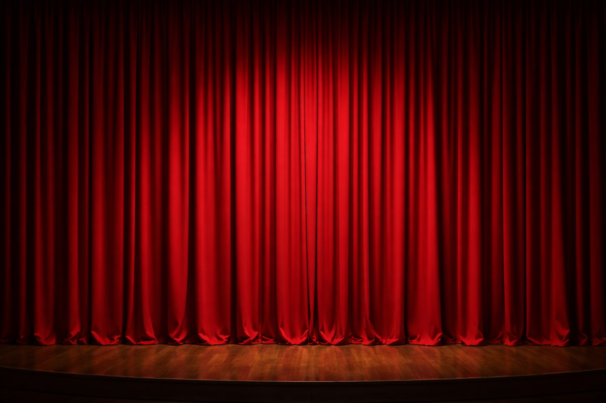
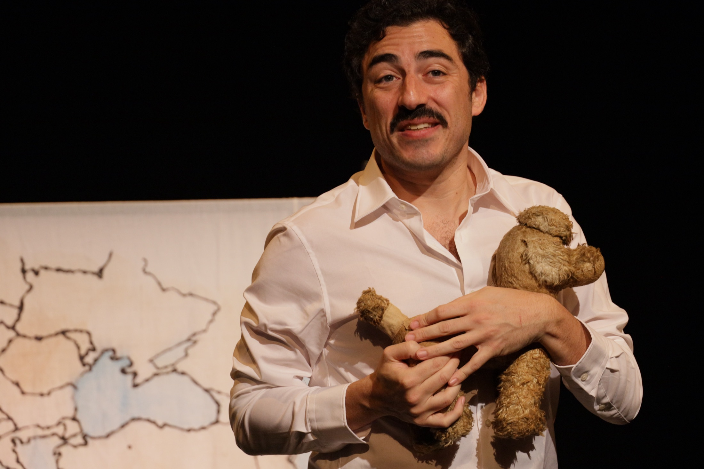
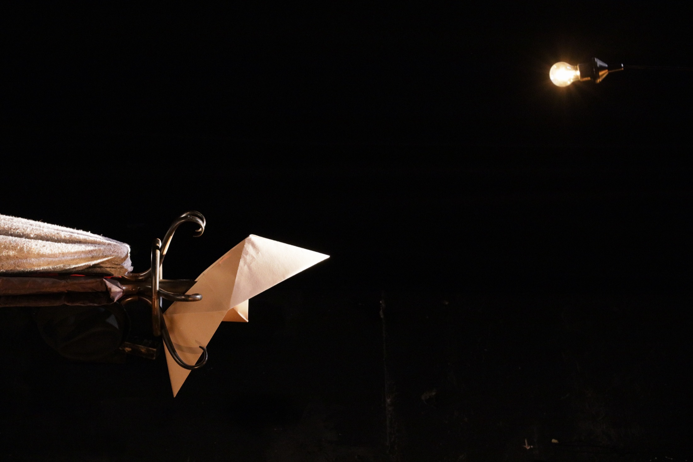
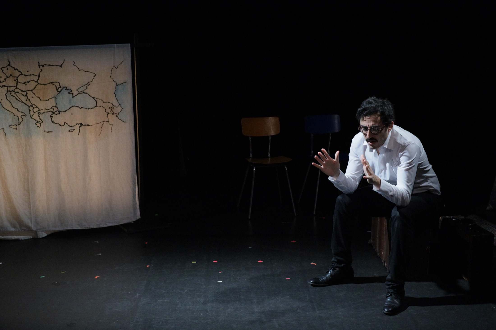
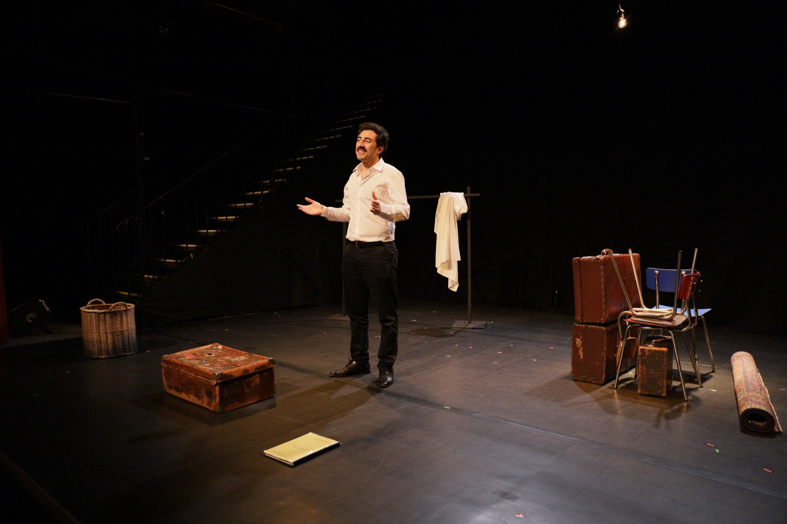

Théâtre / Compagnie Les Larrons
L'Arche et le Château
Projet image lié à une création théâtrale, avec un regard porté sur les présences, les gestes, les rapports de scène et l'atmosphère narrative.

Regard
Composer avec les corps, la scène et les tensions de jeu.
Usage
Créer des images utiles à la mémoire, à la communication et au récit du projet.
Intention
Une scène vivante, entre geste et silence.
Pour L'Arche et le Château, le travail consiste moins à documenter une représentation qu'à attraper la densité d'une présence: le geste avant l'action, le regard avant le texte, l'objet avant le symbole.
La page emprunte aux codes du théâtre avec des noirs plus profonds, un accent rouge sourd et un rythme qui alterne respiration scénique et détail humain.
Séquence visuelle



